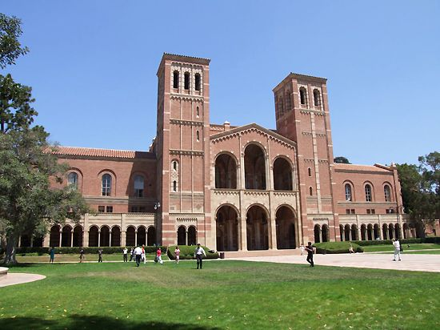

Bienvenue à l'Universite de technologie
Excellence en informatique et technologies de l'information.

Nous préparons les étudiants à relever les défis du monde moderne grâce à une formation pratique, des enseignants qualifiés et des programmes adaptés aux besoins du marché. Que vous soyez passionné par l’informatique, l’ingénierie, les télécommunications ou les sciences appliquées, nous vous offrons un environnement propice à votre réussite. Dans un monde en constante évolution, dominé par les avancées numériques et scientifiques, notre université s’engage à offrir une formation à la fois rigoureuse et tournée vers l’avenir. Nos programmes sont conçus pour répondre aux exigences du marché global, tout en développant l’esprit critique, la créativité et la capacité d’adaptation de chaque étudiant.
Pourquoi choisir notre université ?
Une communauté d'étudiants passionnés par l'informatique.
Étudiants talentueux
Filières diversifiées
Découvrez nos programmes en IA, cybersécurité, développement web, etc.
Dans un monde en constante évolution, dominé par les avancées numériques et scientifiques, notre université s’engage à offrir une formation à la fois rigoureuse et tournée vers l’avenir. Nos programmes sont conçus pour répondre aux exigences du marché global, tout en développant l’esprit critique, la créativité et la capacité d’adaptation de chaque étudiant. Que vous soyez attiré par le développement logiciel, l’intelligence artificielle, les réseaux, l’ingénierie ou les sciences appliquées, vous trouverez chez nous un environnement dynamique, moderne et stimulant. Encadrés par des enseignants qualifiés et soutenus par des infrastructures adaptées, nos étudiants acquièrent les outils nécessaires pour transformer leurs ambitions en réussites concrètes.